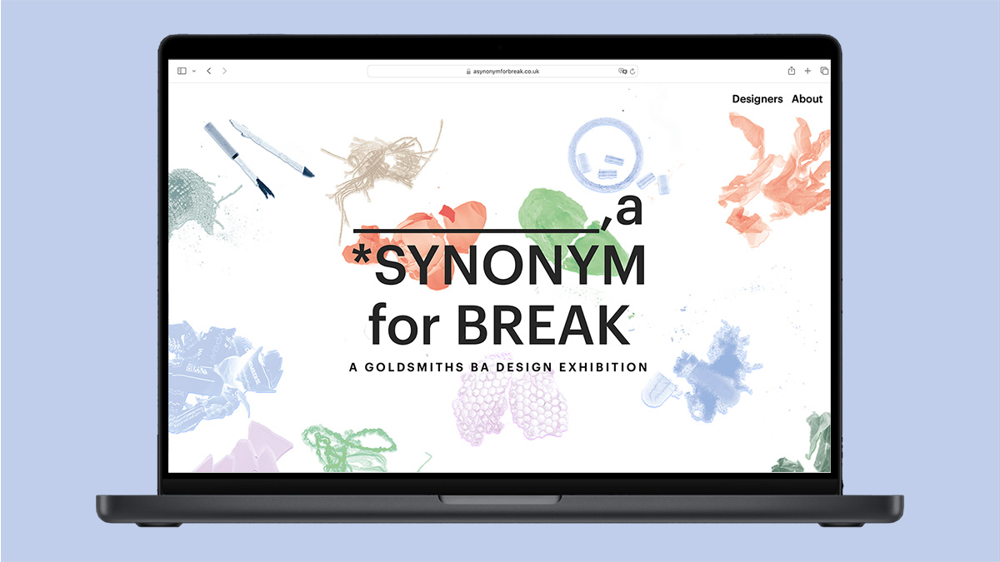
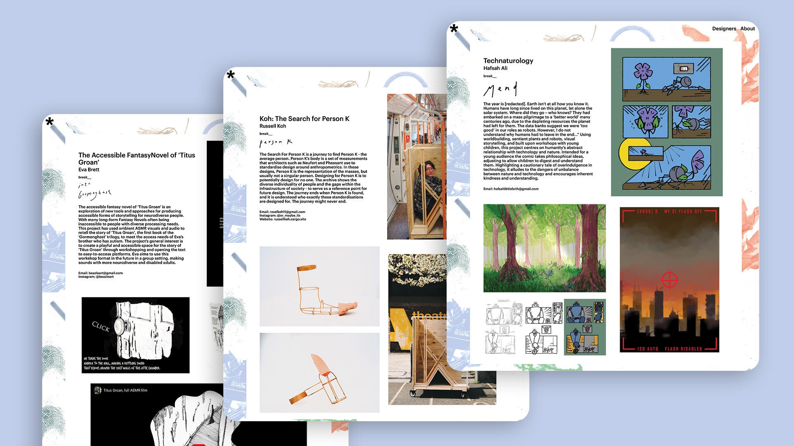
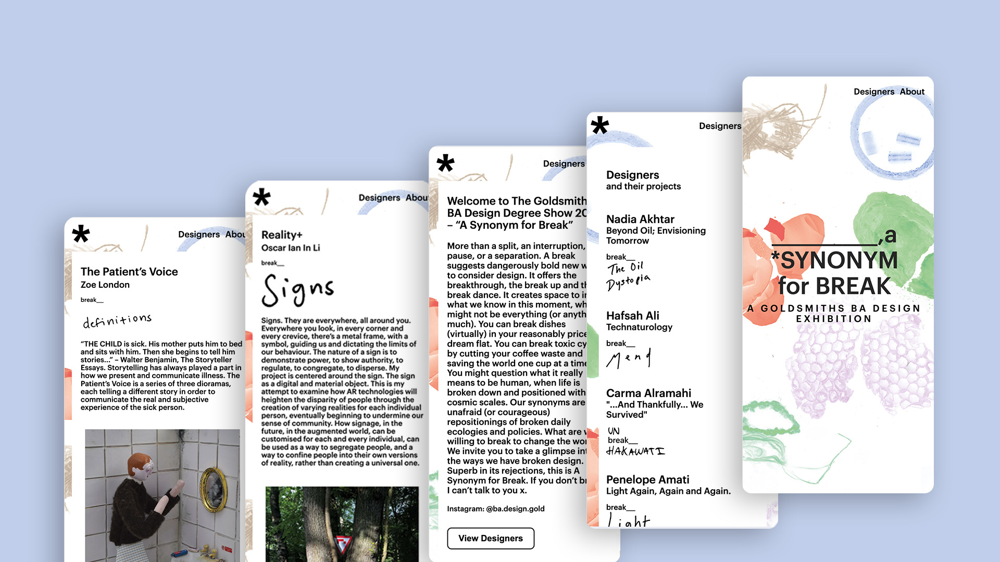

Landing page of A Synonym for Break website
A Synonym for Break
Web Design and Development/ Project Management
A Synonym for Break is the name of my final year exhibition which was held in June 2024. As part of the exhibition prep I put myself forward to design and develop the exhibition website.
As well as making the website I also acted as project manager, liaising with my tutors to make sure the specs were up to scratch and managing a small team who helped me with the content management which involved getting all of the descriptions and images formatted correctly and insuring that all assets had suitable alt text.
 This was a fun and ambitious project. Ambitious because of the short time frame which was around 2 weeks which I managed alongside getting my actually final year project finished and polished for exhibition. It was great to get some hands on experience designing and developing a website to external specifications as while there was some creative freedom, the website had to resemble the physical print catalogue which had been made (I also helped with the production of the publication) which meant working to pre-determined design specifications. 